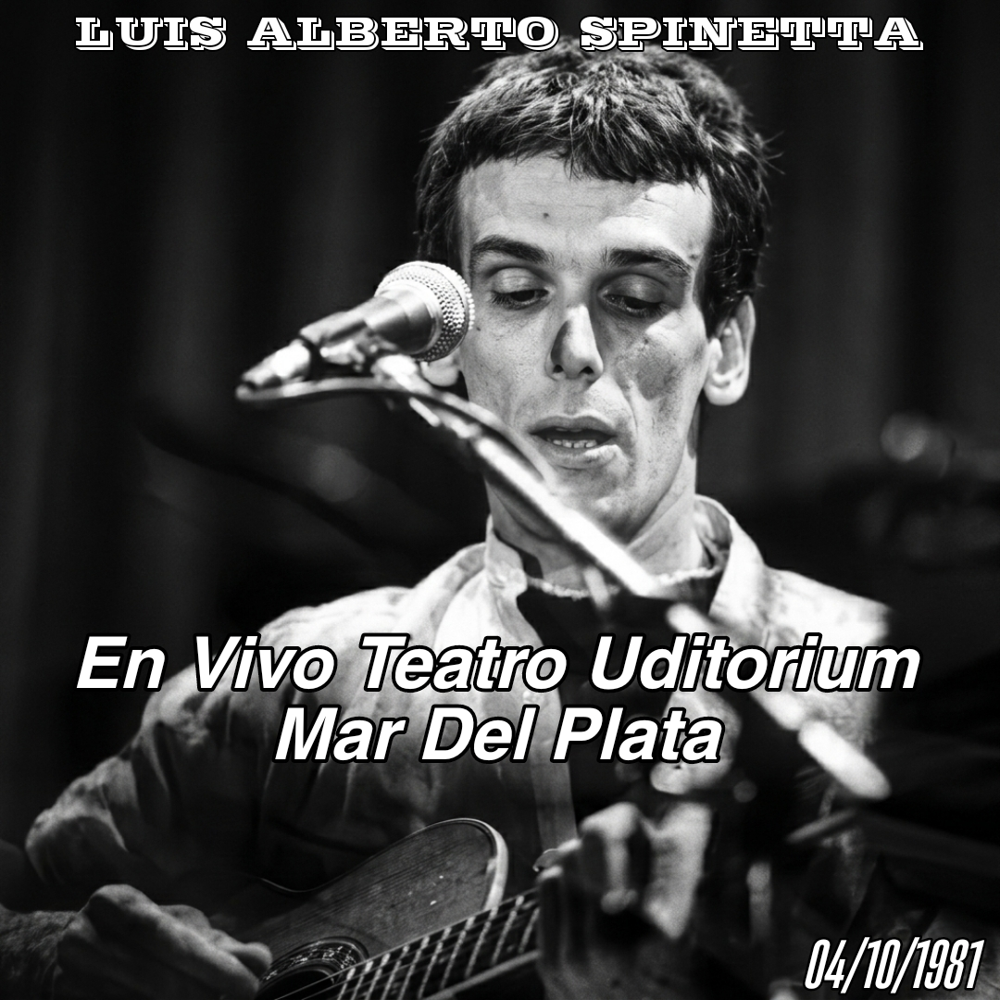

04 de Octubre, 1981 - Mar Del Plata, Argentina

El 04 de octubre de 1981, Luis Alberto Spinetta se presentó en el Teatro Auditorium de Mar del Plata, en un recital de formato íntimo que capturó una etapa de transición fundamental. Solo con su guitarra, el "Flaco" exploró un repertorio despojado que anticipaba el espíritu de su futuro álbum Kamikaze.
En estos conciertos, Spinetta recuperaba gemas de Almendra, Pescado Rabioso e Invisible, dándoles una nueva vida acústica, mientras presentaba canciones que aún no habían sido editadas. Las grabaciones rescatadas por asistentes permiten apreciar la profundidad poética de su obra en su estado más puro.
La portada de esta edición fue remasterizada con inteligencia artificial para ofrecer una definición visual acorde a la importancia de este documento histórico.
Material difundido con fines culturales y de preservación histórica.